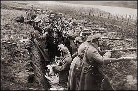
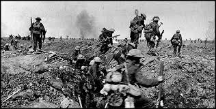

1916–1918 legfontosabb eseményei

A francia és német hadsereg között zajlott. Az első világháború egyik leghosszabb és legvéresebb csatája volt.

Az angol és francia seregek támadták a németeket. Itt vetettek be először tankokat nagyobb számban.
Az Egyesült Államok belépett a háborúba az antant oldalán.
Oroszországban kitört a forradalom, ezért az ország kilépett a háborúból.
A német hadsereg kimerült, az országban éhezés és elégedetlenség alakult ki.
1918. november 11-én aláírták a fegyverszünetet, amely véget vetett az első világháborúnak.
Töltsd ki az első világháborús kvízt, és nézd meg hány pontot érsz el!
Kvíz indítása